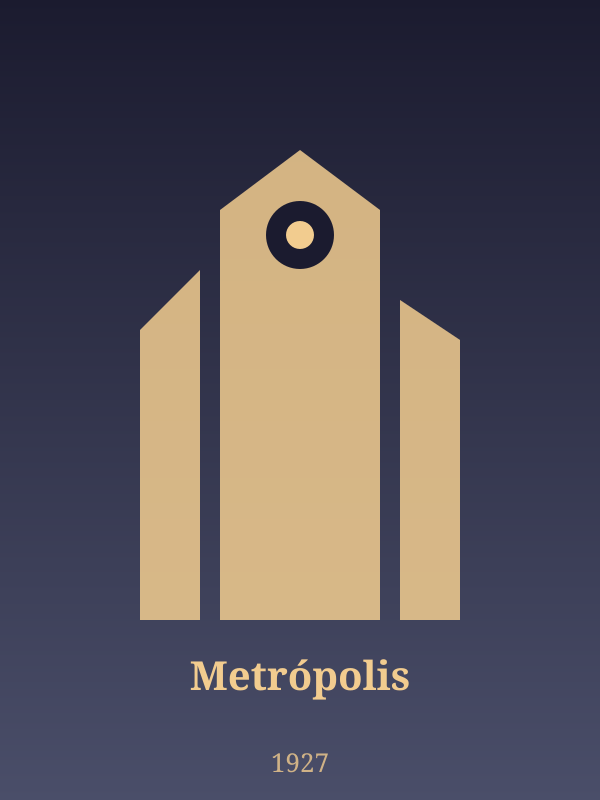
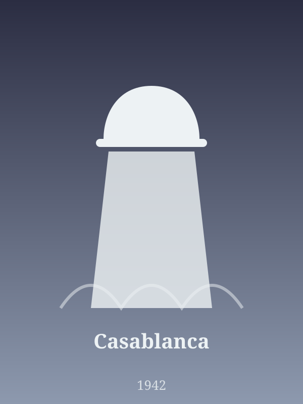
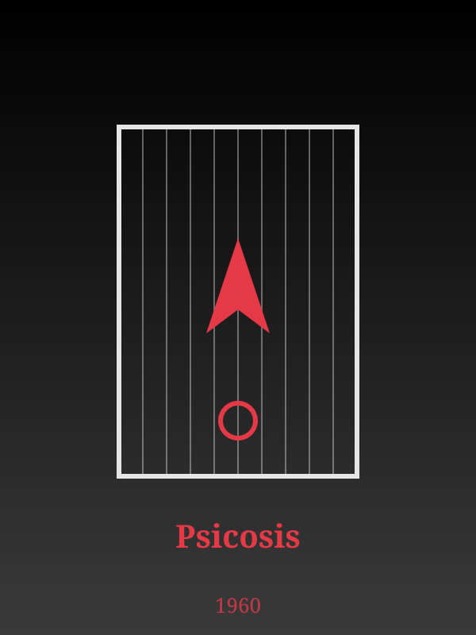
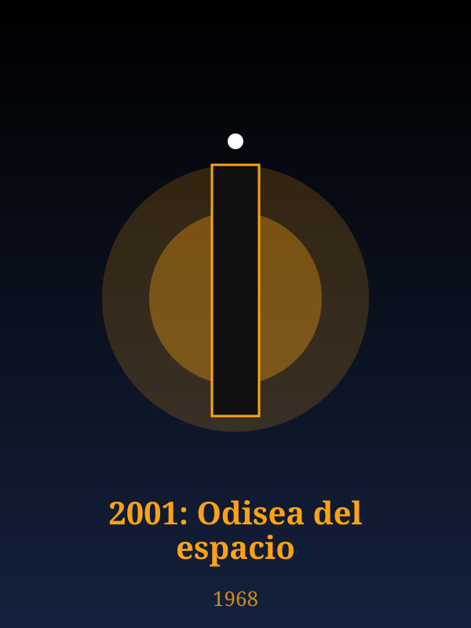
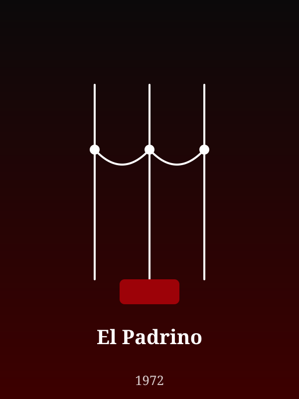

Clásico Imperdible

Ciencia ficción / Expresionismo
★ 8.3
Una travesía visual por los filmes que definieron el lenguaje narrativo, la dirección de arte y la banda sonora de la historia del cine.
Desde el expresionismo mudo de los años 20 hasta la revolución del color y la ciencia ficción de culto. Explora fichas técnicas, géneros y calificaciones verificadas.
Fichas de obras restauradas en alta definición





La saga de la familia Corleone, con una fotografía en penumbra que cambió la manera de iluminar el cine.
Efectos visuales hechos a mano y música clásica que siguen marcando la ciencia ficción.
El Archivo del Cine Clásico Universal reúne fichas técnicas de películas que marcaron una época: del cine mudo alemán al Hollywood dorado y al nuevo cine de autor.
Cada ficha incluye género, duración y una calificación verificada para que puedas descubrir clásicos y armar tu propia colección.